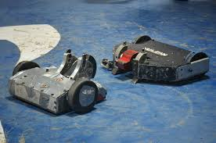

Unleashing Creativity: Our Recent Robotics Workshop
RoboVITics curates dynamic workshops and events designed to immerse students in the world of robotics and automation. From mastering microcontrollers to exploring AI-driven robotics and combat bot design, our sessions blend theory with hands-on learning. Through hackathons, design challenges, and live demonstrations, we foster an interactive space where creativity meets engineering, helping students build real-world skills and breakthrough innovations.
Build the Future with Our Projects
At RoboVITics, we don’t just learn about robotics—we build them. Our projects push the limits of technology, spanning autonomous systems, IoT solutions, AI-powered robotics, and industrial applications. By engaging in cutting-edge research and development, our members transform ideas into functional prototypes, solving real-world problems while honing critical engineering and teamwork skills.
Be Part of the Revolution
RoboVITics is more than a club; it’s a movement dedicated to shaping the future of robotics. Whether you’re taking your first steps in automation or you’re ready to tackle advanced innovations, we provide the perfect platform to grow. With access to industry mentors, cutting-edge projects, and a collaborative learning environment, RoboVITics is where ideas turn into impact. Join us and be part of the next wave of technological evolution!